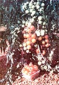
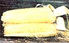
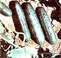
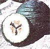
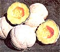

The Best Garden Bets For '82
March/April 1982
After grow-testing this year's seed introductions, MOM's crop evaluator brings you . . .
Brent Elswick
I sometimes think that gardening years tend to alternate between good and bad. After the rainy disaster of 1979, our Kentucky valley had a nearly perfect growing season in 1980. So I probably should have known that last year would be something less than ideal. Sure enough, the extremely dry conditions of 1981 weren't exactly hospitable to such moisture-loving vegetables as cabbage, peas, and potatoes ... but there were a few pleasant surprises even in those categories. And last summer's arid weather was just perfect for many other crops, especially tomatoes and melons (I've never seen a finer year for growing either one).
EARLY TRYOUTS
However, let's start at the beginning. I opened my garden test trials early last spring-as I usually do-with the first plantings of lettuce. While old standbys like BlackSeeded Simpson and Salad Bowl proved their worth, as always, a couple of new stars appeared on the horizon, as well. Crispy Sweet lettuce from George W. Park is as delicious as its name implies . . . and it stays good-tasting much longer than you might expect! Another new green of note is Midget Leaf by the McFayden Seed Company of Canada. This north-of-theborder supplier is known for its shortseason varieties . . . and Midget Leaf is truly one of the best. The tiny, rosette-grouped leaves are an absolute lettuce-lover's delight . .. and since Midget Leaf matures in only 42 days, it's a natural planting partner for Crispy Sweet. You can sow the Canadian variety for your early crop, and then add a few rows of Crispy Sweet to guarantee yourself tasty eating well into the summer.
During the early weeks of the season, 1981 promised to be one of the greatest years ever for peas .. . but then the dry spell set in! Despite the hostile conditions, however, several varieties proved worthy of further trial. In particular, the Green Sugar snow pea (Vermont Bean Seed Company) has about as many good characteristics as I've ever seen. Green Sugar is a sturdy, short plant . . . and it has excellent resistance to yellows (the dread disease that has struck down many a good pea crop in these parts). A second "winner" snow pea being offered for the first time in 1982 is Dwarf Sugar, from Farmer Seed & Nursery. This variety, an update of the old Dwarf Gray Sugar, is much tastier-and a more cooperative producer-than is its predecessor. Its very short vines yield an abundant crop of tender snow peas, although some folks do find the relatively dark color of the seeds objectionable.
My '81 garden trials also uncovered several varieties of standard garden peas that hold promise. Burpee Seed Company-as usual-has a fine new cultivar to offer. This year's introduction is called Grenadier, and it's a truly remarkable pea. The mediumheight plants sport extra-long pods that are literally crammed with plump, sugar-sweet peas. Other fine new varieties include Joff from Unwins, Novella from Park (and other suppliers), Supersweet from Canada's T & T Seeds, Sounder from Rogers Brothers, Kosta from Vermont Bean, and Aldot from Farmer Seed & Nursery. The last variety is particularly attractive: It sprouts into almost midgetsized plants (making it a good choice for gardeners with limited space) . . . and it's a darned prolific producer of tasty small peas!
FROM THE CABBAGE PATCH
Kentucky's typically cool, damp spring weather is quite conducive to cabbage cultivation ... but last year, of course, wasn't typical at all! Most of the varieties I tested didn't get a fair trial under the unusually hot, dry conditions, and cabbage became my major disappointment of 1981. A few seeds, however, did fairly well against the odds . . . and those are worthy of note.
Two entries from Stokes Seeds-Canada Kraut and Superslaw-proved to be real survivors. The Canada Kraut grew vigorously and yielded tender, three- to fourpound heads. Superslaw, a laterappearing ballhead type, made a tasty slaw, and kept right on producing clear into the late fall! Another triumphant variety was Hercules (by Gurney Seed & Nursery), which grew into excellent five- to six-pound heads. Two final cultivars, Erdene from Sluis & Groot and Prizetaker from Midwest Seeds, each developed delicious three- to four-pound heads . . . and I intend to give both varieties another try this summer.
Before we leave the Cole crops, let's take a look at some of the other family members I was able to test last season. The most exciting new broccoli seed comes from Sluis & Groot, a little-known (at least in the U.S.) Dutch firm that's only recently begun offering fine European varieties to American gardeners. S & G's 1 Hybrid broccoli is a truly remarkable vegetable that begins to head early and keeps right on producing tender, succulent shoots as long as it's regularly harvested. Another noteworthy broccoli for '82 is Southern Cross from Alberta Seeds. Despite the fact that it was developed in Canada, it grows especially well in warm climes . . . so you southern gardeners who have had trouble raising broccoli might like to try this hybrid.
While brussels sprouts aren't everybody's favorite, a good many folks are fond of the taste of the "mini-cabbages". One of the best new arrivals this year is Prince Marvel from Otis Twilley (a leader in the introduction of good new seeds). If you plant Prince Marvel either very early or very late in the season-and keep it weedfree, watered, and fertilized-this variety will reward you with astounding quantities of toothsome vegetables. As for cauliflower, I didn't find any new varieties to match last year's Contessa (Twilley), but I was impressed with Tornado (Sluis & Groot) and Early Snowball (Burpee). Each is quite dependable, especially if planted fairly early in the season.
THE ROOT OF THE MATTER
After the lettuce, peas, and cole vegetables are planted, I turn my attention to the root crops. And, of those, carrots and beets are my family's favorites.
Burpee's new carrot offering, Short-N-Sweet, deserves the attention of all serious gardeners. It's a stocky Chantenay type that will grow-and produce up a storm-just about anywhere ... even in hard clay soils (where it's usually difficult to coax carrots into production). Short-N-Sweet has a fresh, crunchy texture that most folks will love. Of course, the Chantenay hasn't yet been developed that can equal the quality of the Nantes types, and one of those "supercarrots" this year is Nandor (by Park). This beauty grows energetically, tastes superb, and has a lovely deep color.
Other fine new carrots include Trophy (a long variety from Joseph Harris & Company), Bunny Bite (a miniature from Seedway), and Red Elephant (offered by the Abundant Life Seed Foundation). Red Elephant is a large vegetable that is indeed almost red in color, and of surprisingly good quality for such a hefty variety.
Most people who plant beets tend to stick to the old standby Detroit types . . . but many of the newer cultivars certainly deserve a try. For instance, a 1982 introduction from Agway Seeds has to rate as one of the sweetest-tasting beets on the market. It's called Honeyred, and it truly is a honey of a beet! Another notable variety is Firechief (a Ferry-Morse development that's offered in the Seedway catalog, among others), which has short tops, is an excellent buncher, and produced magnificently in my parched garden plot. And if you tend to favor pickled beets, try either Sweetheart from Farmer's or Baby Badger from Henry Field & Company. (The latter is fairly small, so it's a wise choice if you're tight on garden space.)
GOOD NEWS FOR TOMATO LOVERS
As I mentioned earlier, last year's semidrought conditions actually benefited a few crops ... and tomatoes really prospered! I could list a goodly number of new varieties that performed well (I must have tried 35 to 40 different types of seeds, and every one of them scored high), but two stood out, even among that stellar crowd.
Cherry Grande is a superb miniature tomato developed by Petoseed, one of North America's leading producers of new vegetable varieties for both home gardeners and professional horticulturists. The Grande develops fruits a little larger than normal cherry tomatoes ... and its tall, semideterminant vines resist almost all major diseases. In addition, the fruits' luscious red color makes them a favorite for preserving (even with my wife, who's a choosy canner, to say the least).
Sharing top honors with Cherry Grande is Freedom, a variety which, although not strictly new (Abbott & Cobb has offered it for a couple of years now), is just beginning to gain well-deserved popularity among home gardeners for its super eating quality and hardy bushing characteristics. The strong, determinant vines scoff at most diseases, and your first sampling of their large fruits (8-12 ounces each) will make you eager for seconds. Freedom was originally developed for market gardeners and commercial growers, but-now that it's more widely available-it shouldn't be overlooked by tomato-loving home gardeners.
Year after year, Stokes seems to come up with new tomatoes that are worthy of attention . . . and if you're a canner, you'll especially like Veepro and Veepick. The first is great for whole packing, and the second is hard to beat among juicing tomatoes, since it's unusually large and easy to skin. Another Italian (or juice) tomato that did well in my 1981 trials was Ferry-Morse's Napoli. This variety doesn't produce huge fruits-as does Veepick, for example-but you can expect to harvest absolutely astounding quantities from it.
Those of you who live in areas with short growing seasons ought to give Mighty Boy (from Alberta Seeds) a try. It can't actually rival Freedom, but it is far and away the best of the early tomatoes I tested last year. In fact, I found it hard to believe that such a small plant could grow so many large (sixto eight-ounce) fruits! One of the new season's better open-pol linated early 'maters is Highlander from D.V. Burrell, a reputable company that offers a large selection of high-quality, fresh seed. The extremely early plant produces loads of flavorful fruits, and should do so under almost any reasonable growing conditions.
Other new-or pretty much unknown-tomato varieties worth investigating include Early Pick (Burpee), Nematex and Summertime (Porter & Sons Seedsmen), Sunlight Pole (Willhite Seed Farms), and Jumbo Jim and SuperRed (Agway). If your tomato cultivation area is limited to a patio or tiny backyard patch, try Toyboy (Wyatt-Quarles) or Sugar Lump (J.W. Jung): Each produces oodles of small, sweet fruits on sturdy little plants.
PEPPERS AND EGGPLANT
Not many seed houses brought out new varieties of peppers and eggplant this year, but a few of those scarce introductions are worth mentioning. Farmer's now offers a dependable pepper called Wisconsin Lakes, a thick-walled lovely that's just right for salads or stuffing. Other promising pepper newcomers are Valley Giant from Twilley . . . Park Pot from Park (it's very dwarf, but also very productive) . . . and New Ace from Abbott & Cobb.
Among eggplant varieties, you'll do well to look into H.G. Hastings' Purple Thornless, which is especially suited to warm southern climates .. . and Pick-Me-Quick (from Unwins), an exceptionally good vegetable that matures much more rapidly than does the average eggplant.
CORN . . . SWEET AND ABUNDANT
After tomatoes, sweet corn is probably the best-loved home garden vegetable . . . and it's my favorite! Last year's dry weather really agreed with my corn crop, too, resulting in a banner season for the scrumptious summer treat. The very best corn I tested in 1981 was Sensation 95 from Hastings. Although the cultivar takes a full three months to mature, the harvest of nineto ten-inch-long ears is well worth the wait. Don't miss this one!
Another long-eared breed of considerable merit is Seneca Scout, available from many seed houses (including Twilley). The Scout matures a week or so ahead of 95, but its quality doesn't suffer one bit for the shorter season. I was also impressed by Mainliner, a superior mainseason corn sold by both Bu rpee and Midwest.
If you have a particularly insistent sweet tooth, you'll be pleased to learn that there are several good new types of supersweet corn for you to choose from. Twilley's Dinnertime is one of the best: Its large ears are well-filled and have memorable flavor . . . as does Park's Butterfruit, which develops somewhat smaller ears than Dinnertime, but is ready for harvest a few days earlier. Another fine new supersweet is Earligrow from Burrell, a tasty cultivar that matures in about 68 days.
While conducting my '81 trials, I also found quite a few early corn varieties of note. Earligem (from Stokes) matures in only 60 days, and has excellent eating quality. Other contenders include Early Prince from T & T . . . Starbrite (top-notch seed from Farmer that matures in about two months) . . . Beacon from McFayden . . . Early Star from Midwest . . . and Debut from Rogers (which does well when planted early in still-cold soil).
Many gardeners are now branching out to try bicolor sweet corn . . . and I can recommend several types in this category. Herbst Brothers score high with BiHerbst, a 75-day grain that's as pretty to look at as it is delicious to eat! Each ear is covered with bright green husks tinged with red, and the corn's taste is equal to that of any of the lateyielding varieties. Twilley's Seneca Pinto matures quite late, but produces long and dependably sweet ears. Another great new bicolor corn is Calypso from Rogers . . . and since its harvest dates are right between those of the other two I've just mentioned, you could plant all three kinds to enjoy delightful (and colorful) eating over an extended season.
I didn't find nearly as many good new white corn varieties in this test series as I have in the past. However, Seedway did introduce Crystal Delight . . . a crop that matures much earlier than other high-quality standard "albinos" and even before Platinum Lady (Meyer Seeds). You may remember that I previewed that toothsome delight in last year's garden report (which appeared in MOTHER NO. 68, page 118), but it performed so well once again this year that I feel it deserves a little more attention. No one who's had the pleasure of biting into the tender, sweet kernels of an ear of Platinum Lady can deny its superlative quality. In fact, I believe that this cultivar is the first actual rival of that venerable mainstay, Silver Queen.
To round out the list, here are a few more excellent varieties of sweet corn that I discovered this year: Big Jim (an 85-day cultivar from Ontario Seeds), Banner (Rogers Brothers' new main-season crop), Seneca Sentry (another winner from Twilley), Pennfresh ADX (a fine supersweet from Agway), Pearls & Gold (a sweet bicolor from L.L. Olds Seed Company), and Burgundy Delight (Seedway's great-tasting bicolor).
CUCUMBERS . . . COOL AND CRISP
Our family always looks forward to summer's first fresh-from-the-garden cucumber, and during the 1981 season that honor went to Northern Pickling from Johnny's Selected Seeds. Furthermore, the little vine just kept on producing tasty cukes well into the dog days . . . and we decided it was one of the top nonhybrid picklers we've ever grown.
The very best hybrid cuke I've seen in a long while, though, is new from Harris: Medalist, as it's called, grows eight- to nineinch fruits that seem almost impervious to disease, and are absolutely unbeatable for slicing into a cool summer salad. The other outstanding cucumber in my 1981 trials was Amira by Park. While not as tough against the wilts as is Medalist, this Mediterranean variety does hold its own ... producing six- to eight-inch fruits that area delight to eat, skin and all.
And aside from those hands-down winners, there were a few other cukes that pleased us mightily last year. The list includes Bush Champion by Burpee and Park Whopper by Park (both super vegetables with compact vines) . . . Earlipik by Alberta (a prolific pickler) . . . Bushcrop (another fine midget from Jung) . . . and OSC Hybrid Cuke (a really superior slicer from Ontario).
BETTER BEANS THAN BEFORE
Last year wasn't a particularly good one for green beans, but a few new introductions did manage to stick it out. If you like the long-popular Blue Lake beans, you'll probably also enjoy Gator Green from Meyer Seeds, which is an excellent producer of plump, dark green pods. Burly (Rogers) is the type to grow when faced with less than ideal conditions, since it'll produce almost anywhere (although-while it certainly is tasty-it isn't quite up to Gator's standards).
Still another bush bean worth noting is known as Exp. 121, a not yet named introduction from Gurney. This new one is great for canning and eating fresh (as are Bestcrop from Vermont and Greenway from Agway). Unique among the Romano types is Harris's Green Ruler, a bush version that's hard to beat. If you'd like to raise a dry-shell bean (for baked beans, soup, or shelf storage), try Peregion from Abundant Life. I've never seen a more productive dry-shell, and its mottled black seeds are lovely.
Despite 1981's adverse growing conditions, I was also able to pinpoint some fine new pole beans for '82. The best of the bunch is probably Selma Star from Park. Each long, handsome pod makes fine eating, and the Star is actually supe rior to such older poles as Kentucky Wonder. Another '82 newcomer, Blue Ribbon from Vermont, somewhat resembles the famed White Half Runner ... but it doesn't have quite the same quality as does that old southern favorite. The seeds are also a bit dark, a fact that will make the bean undesirable as a canner for many folks. However, Blue Ribbon does appear to be a durable variety that can be counted on to produce steadily, even in bad crop years. The last pole bean of note is Dade from Hastings. Although it isn't officially anew variety, this McCaslan type is all but unknown outside of its native South ... but it's sure to please any gardener who likes the strong taste of pole beans.
SQUASH FOR ALL SEASONS
There are a number of fine new varieties of squash for 1982, both summer and winter. Kuta from Park is probably destined to be the most famous of the lot. This combination vegetable can be cooked like a summer crookneck if it's picked when immature, or baked like a winter squash (or even a pumpkin) if it's harvested late in the season. Another "crossover" is Table Gold from Twilley: Fry it up like a tender summer squash or prepare it, later in the season, as you would an acorn or butternut. Special among the summer types of squash are Multipik from Harris and Dixie from Hastings, both of which offer medium-sized yellow fruits. Black Magic from Park, another sure bet, is a fine black zucchini . . . one of the best you'll find in any seed catalog.
If you favor winter squash, I have a goody to recommend this year ... although it's actually a holdover from the 1980 trials. Although Melon squash was featured in last year's report, I must sing its praises once again! The fact is, I suspect this could very well be the greatest winter squash yet developed . . . if not one of the best vegetable varieties ever! The huge 20- to 30pound fruits contain lipsmackingly sweet flesh, and I think any gardener who passes up this incredible cultivar is doing him- or herself an injustice. Although Thompson & Morgan had nearly run out of the seed at the time my article appeared last year (the firm made MOTHER-readers a special offer on the remaining stock), Melon squash is now available from several other companies . .. in addition to being offered again by Thompson & Morgan.
IN THE GOOD OLD MELONTIME
Now we come to the real stars of last year's trials . . . the melons. I'm sure most gardeners would agree that no midsummer meal is quite complete without a dessert of sweet, cold melon . . . and I can recommend some dandies for your '82 patch. First of all, I'd be hard pressed to imagine a cantaloupe that's any better than Chieftain (from Henry Field). This disease- and pest-resistant cultivar is a nearly foolproof grower . . . and each six- to eightpound fruit is chock-full of rich, orange goodness.
Twilley's Early Crenshaw is another worthwhile addition to any melon-fancier's garden. Although its season is about seven to ten days longer than that of most midseason varieties, Early Crenshaw is definitely worth the wait. The color and flavor of its flesh lie somewhere between those of cantaloupe and honeydew ... and you'll find that 12- to 14-pound fruits aren't at all unusual. I also liked the new cantaloupe from Harris, called Superstar, which consistently produced extra-large fruits of high quality.
One of the most unusual melons I tried was Valencia (Herbst). If you have a long growing season, you ought to try this strange fruit. It's large and green and wrinkled, yet offers flavorful white flesh that's a little like that of a honeydew. Other notable cantaloupes tested in the '81 trials were Honeyloupe, a cross offered by Twilley and others . . . Gurney Giant, a superlarge and super-tasty variety ... and Short-N-Sweet, a nice midget from Park.
Watermelons grew well in '81, too, and I found several especially good ones among the relatively few new offerings. The best was probably North Carolina Giant, from Wyatt-Quarles. This large variety was originally developed as an outsized "first prize at the county fair" type, but I suspect it'll soon catch on among many home gardeners who mark the arrival of full summer by harvesting the first sweet melon. Another tasty introduction is Chubby Gray from Willhite (a scaleddown version of the well-loved Charleston Gray), which never seems to stop producing great-tasting melons. Park's Whopper is also a real treat, particularly for folks who like a smaller icebox variety. Other good choices for this year are Summit by Willhite and Blackstone by Burrell, two Black Diamond types that produce 20- to 25-pound fruits.
THE SUM AND SUBSTANCE
Finally, if I haven't yet worn out your back-or your gardening tools-there are still a few more standouts I simply must mention! I was particularly delighted with the results I received from the Belrus potato (L.L. Olds), the Royal Globe turnip (Twilley), and the Lee okra (Hattings).
Among the new strawberries, I found that Royalty from Burpee is appropriately named ... as is Earliglow, an excellent early berry sold by Allen. And from Walter K. Morse Company comes Honeyoye, which has to be one of the finest all-purpose varieties ever developed . . . its luscious, dark red berries taste so sweet that you'll swear they're laced with honey.
Well, I hope my 198 garden-testing report has inspired you to do some serious sowing this spring. Although the year's seed catalogs present a stunning array of worthwhile new crops to try, you're sure to score a high number of successes if you plant the following "can't miss" varieties: Cherry Grande and Freedom tomatoes . . . Early Crenshaw, Chieftain, Superstar, and North Carolina Giant melons . . . Sensation 95 and Bi-Herbst sweet corn . . . S & G 1 Hybrid broccoli . . . and Medalist and Park Whopper cucumbers. They're all best bets for your garden in 1982!
EDITOR'S NOTE:Most of the vegetable varieties mentioned in this article can be found at seed and garden suppliers, or can be ordered by mail. The names and addresses of many of the firms noted here are listed in "MOM's 1982 Seed Compa ny 'Wishbook' Guide" (MOTHER NO. 73, page 166 . . . see page 68 to order back issues).
|
 Among the best garden bets for 1982 is Cherry Grande, a choice miniature tomato developed by Petoseed. |
 One attractive main-season super-sweet corn is Butterfruit, from Park. |
 Bi-Herbst bicolor corn matures in 75 days and provides really flavorful eating. |
|
 True to its name, the Medalist cucumber from Harris turns out superior slicing cukes. |
 Inside the wrinkled green rind of Herbst's Valencia melon is delicious white flesh. |
 Harris's new cantaloupe, Superstar, proved a dependable producer of large, succulent fruit. |